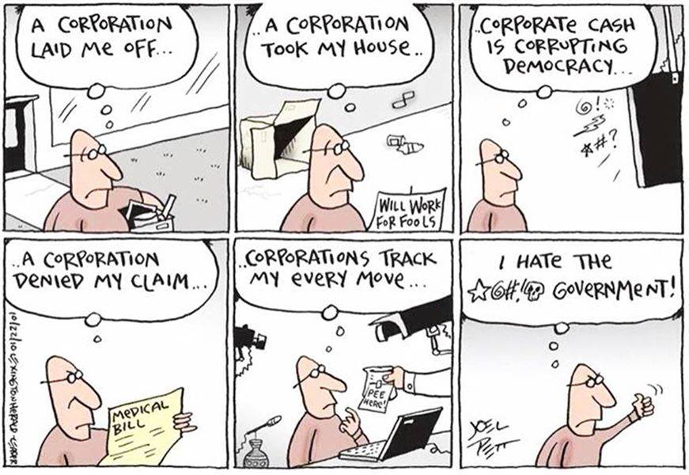
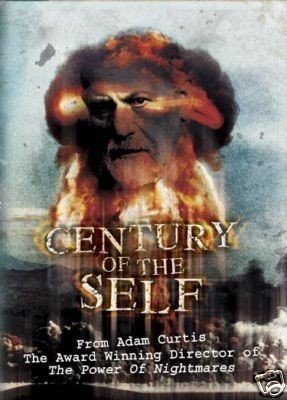
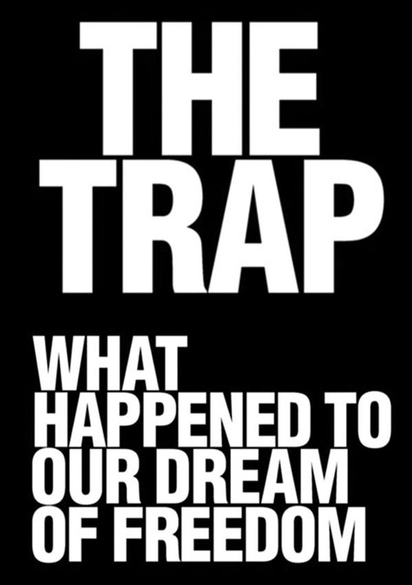
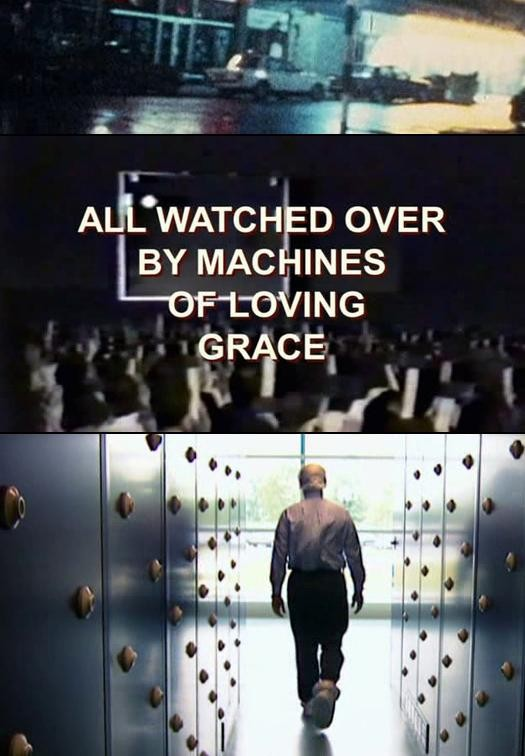

Adam Curtis

If you’re interested in becoming more of an activist within your community, then the information provided by Adam Curtis through his documentary series is imperative to acquire. Below are the transcribed conclusions from Curtis’s top four series: The Century of the Self (2002), The Power of Nightmares (2005), The Trap: What Happened to Our Dreams of Freedom (2007), and All Watched Over By Machines of Loving Grace (2011).
Before getting into each one, I want to provide my biggest take-away: We have to be very conscious and deliberate about what we choose to believe about ourselves and others… to understand what motivates different people. If we wish to be truly free, then that requires us to critically analyze and question the premise of every ideology before following it. Otherwise, we may easily fall into a trap and become infected by a false belief that shapes our behavior and which will ultimately become a self-fulfilling prophecy for us. Confirmation bias serves to worsen any situation. If we want a better life, then instead of targeting what is lowest in humans, we must seek what is highest in us.
And so, these series serve to reveal the dangerous unquestioned foundations / subtext hidden behind accepted messages / guiding ideologies in society that have influenced the development of government and the marketplace. The very fact that premises go unquestioned causes us to equally make false conclusions with devastating effects for the people.
The four accepted premises in each series, and where they come from, are:
1. The masses are incapable of rational thought and instead are a slave to their emotions, born out of the observations of WWII.
2. Society is becoming increasingly isolated and selfish via the Liberal Movement that was born out of the excess of a super-controlling government / corporations of the 1950’s due to the above premise.
3. People are only motivated by self-gain, which the hostile environment of the Cold War where Game Theory was developed by nuclear strategists in America, helped to further the suspicion / distrust of others. This eventually was adopted by economists and then spread into politics.
4. Self-organizing groups where everyone stands on their own are a better form of governing than a hierarchy of power. The idea to replace government with an un-restrained and un-regulated free-market, which is born out of the misconception that nature and the “natural order” of things maintain a certain state of balance and equilibrium when left alone.
The four resulting politics that developed out of this are:
1. In order to control the dangerous, unpredictable subconscious impulses of man, we must feed their conscious mind with a program to follow. Give them the family model to strive for, along with having a wife that stays at home, and satisfy their whims and desires so they become sedated and more docile. Who complains when they have their “bread and circuses?”
2. The people need a common goal, purpose… meaning an alien enemy that we must defeat… in order to unite us together. Since the end justifies the means, it’s okay to exaggerate the potential threat of an enemy against our safety. Fear is the way to re-establish the power of a government that has failed to provide the bright future that they have promised us. After all, we are morally perfect, and thus have a duty to spread our vision and way of life to save others from themselves.
3. Replace the lie of altruism, with the honestly of selfishness. Run away from people that claim to be working for the common good of men, since they’re clearly delusional with an equally false concept that they know best meaning they think they can’t be replaced allowing them to do anything to reach their end, and replace those public/social industries with private industries that are instead only motivated by personal incentive that is gained through reaching their target goals.
4. Strive for communes and ultimately anarchy. Imperialism and understanding “my place in society” is justified by believing in a natural order of things and people, which prevents social mobility. Since nature cannot be question, then the existing structure of society can’t be either.

(Adam Curtis – Film maker from the UK) In 1939, Edward Bernays (Sigmund Freud’s nephew) created a vision of a future world in which the consumer was king. It was at the world’s fair in New York, and Bernays called it “Democra-city.” It was one of the earliest and most dramatic portrayals of a consumerist democracy: a society in which the needs and desires of individuals were read and fulfilled by business and the free-market.
(Stuart Ewen – Historian of Public Relations) The world’s fair created a spectacle, in which all of these concerns were met. They were met by Westinghouse [Electric], General Motors, and the American Cash Register Company. Company after company presented itself as the sort of center piece of society, in which human desire, want, and anxiety would all be responded to. It would all be met purely through the free-enterprise system.
There was this sort of notion that the free-market was something that was not guided by ideologies or political power. It was something that was simply guided by the people’s will.
This was the model of Democracy that both [Britain’s] New Labour and the American Democrats bought into, in order to regain power. They had used techniques developed by business to read the desires of consumers, and they had accepted Bernays’s claim, that this was a better form of Democracy.
But in reality, the world’s fair had been an elaborate piece of propaganda designed by Bernays for his clients… the giant American corporations. Privately, Bernays did not believe that true Democracy could ever work. He had been profoundly influenced in this by his uncle’s theories of human nature. Freud believed that individuals were not driven by rational thought, but by primitive unconscious desires and feelings. And Bernays believed that this meant it was too dangerous to let the masses ever have control over their own lives. And consumerism was a way of giving people the illusion of control, while allowing a responsible elite to continue managing society.
It’s not that the people are in charge, but the people’s desires are in charge. The people are not in charge, the people exercise no decision making power within this environment. So Democracy is reduced from something which assumes an active citizenry to something which now increasingly is predicated on the idea of the public as passive consumers. Essentially what we’re delivering them is doggy treats.
The problem for New Labour was that it believed the propaganda. They took at face-value the idea promoted by business: that the systems invented to read the consumers’ mind could form the basis for a new type of Democracy. Once in power, New Labour tried to govern through a system that Philip Gould called: “Continuous Democracy.” But what worked for business in designing products, led the Labour government into a bewildering maze of contradictory whims and desires.
For much of Labour’s first term, the focus groups said that the railways were not a high priority, and Labour’s policies faithfully reflected this. But now, those same groups are blaming the government for not having invested more money sooner in the railways.
(Derek Draper – Assistant to Peter Mandelson 1992-1995) The point about focus group-politics is that there isn’t one, because people are contradictory and irrational. And so, you have a problem in terms of deciding what you’re going to do if all you do is listen to a mass of individual opinions that are forever fluctuating and don’t really have any coherence, and crucially are not said in context. So that’s why people can say: “I want lower taxes and better services.” Well of course they do. You [then] say: “Do you want to pay more taxes to get better public services.” People are less sure. They then don’t believe that if they do pay more taxes they will be spent on better public services. So you end up in this quagmire, where the truth is the politician has to say: “This is what I believe… I believe that you should pay slightly more taxes to make better public services and I pledge that I’m competent enough to actually use that money wisely. Do you want to now vote for me, yes or no?” And that’s what Tony Blair has failed to do. Blair tries to feed back to [the people] what they already believe, [which is] a load of individual, incoherent, contradictory non-sense. That’s all he has to offer, and then he wonders why people don’t get him. They don’t get him because they’re looking for someone to do something that they can’t do themselves, which is actually come up with a coherent political opinion that they might have faith in.
New Labour is faced with a dilemma. The system of Consumer Democracy that they have embraced has trapped them into a series of short term and often contradictory policies. There are now growing demands that they fulfill a grander vision: that they use the power of government to deal with the problems of growing inequality and the decaying social fabric of the country. But to do this, they will have to appeal to the electorate to think outside their own self-interest. And this will mean challenging our now dominant Freudian view of human beings as selfish, instinct driven individuals; which is a concept of human beings that has been fostered and encouraged by business, because it produces ideal consumers. Although we feel that we are free, in reality we, like the politicians, have become the slaves of our own desires. We have forgotten that we can be more than that, that there are other sides to human nature.
(Robert Reich – Member of Clinton Cabinet 1993-1997) Fundamentally here we have two different views of human nature and of democracy. You have the view that people are irrational, that they are bundles of unconscious emotion. That comes directly out of Freud. And businesses are very able to respond to that. That’s what they have honed their skills doing. That’s what marketing is really all about. What are the symbols, music, images, words that will appeal to these unconscious feelings? Politics must be more than that. Politics and leadership are about engaging the public in a rational discussion and deliberation about what is best, and treating people with respect in terms of their rational abilities to debate what is best.
If it’s not that, if it is Freudian, if it is basically a matter of appealing to the same basic unconscious feelings that business appeals to, then why not let business do it. Business can do it better; business knows how to do it. Business, after all, is in the business of responding to those feelings.
(Adam Curtis – Film maker from the UK) This story began over 30 years ago. It was when the dream that politics could create a better world began to fall apart. Out of that collapse came two groups, the [Radical] Islamists and the [American] Neo-Conservatives. Looking back, we can now see that these groups were the last political idealists, who in an age of growing disillusion tried to reassert the inspirational power of political visions that would give meaning to people’s lives. But both have failed in their attempts to transform the world. And instead, together they have created today’s strange fantasy fear, which politicians have seized on. Because in an age when all the grand ideas have lost credibility, fear of a phantom enemy is all the politicians have left to maintain their power.
(Bill Durodie – Director International Centre for Security Analysis, Kings College) In a society that believes in nothing, fear becomes the only agenda. Whilst the twentieth century was dominated between a conflict between a free-market right and a socialist left, even though both of those outlooks had their limitations and problems, at least they believed in something. Whereas, what we are seeing now is a society that believes in nothing. And a society that believes in nothing is particularly frightened by people who believe in anything. And therefore, we label those people as fundamentalists or fanatics, and they have much greater purchase in terms of the fear that they instill in society than they truly deserve. But that’s a measure of how much we have become isolated and atomized rather than of their inherent strength.
But the fear will not last, and just as the dreams that the politicians once promised turned out to be illusions, so too will the nightmares. And then, our politicians will have to face the fact that they have no visions, either good or bad, to offer us any longer.

(Adam Curtis – Film maker from the UK) If one compares the incomes of Americans in real terms, between the end of the 1970’s and the end of the 1990’s, those at the bottom of society saw their income actually fall, those in the middle saw a slight increase, while those at the top increased by an extraordinary amount.
(Kevin Phillips – Political Analyst) If you take income after taxes you find that the average household cash income in the bottom fifth of Americans went from $9,300 a year to $8,700.
You find that the average household cash income in the middle fifth, the median, went from about $31,800 to #33,200.
You take the top 1% in the same time period; you go from $256,000 a year to $644,000 a year. That to me is the simplest set of numbers I can use to sum it all up. I have many variations, but those just eat right out of the box at you; just incredible how you can have something like that.
Underlying the political experiments of the 1990’s has been a simplified idea of human beings. That at heart they were just self-seeking individuals, whose needs could be best met through the marketplace, not politics. If left unregulated, the markets would benefit everyone. In the face of this simple, irresistible argument politicians have given away much of their power. But what had actually happened, was the return of inequalities and social injustices not seen for 100 years. The very thing politicians were supposed to prevent. Politicians now found themselves weakened and corrupted, and without the power to change society. And millions of individuals were left without representation and even less control over their lives.
There is one thing that makes our freedom today different from positive liberty. Positive liberty is driven by a vision that freedom is for something, the freedom to do or become something new, out of which a better world will come. Negative liberty has no such vision. It isn’t for anything. At its heart, it has no purpose other than to keep us free from unnecessary constraint or harm. And in using force to create a world based on negative liberty, the democratic revolutionaries have actually led millions of people abroad into a world without purpose or meaning. This idea of freedom is still portrayed by many politicians and influential commentators as a universal absolute. They assume it is only a matter of time before it spreads throughout the world. But this may not be true. As this series has shown, the idea of freedom that we live with today is a narrow and limiting one that was born out of a specific and dangerous time… the Cold War. It may have had meaning and purpose then as an alternative to communist tyranny, but now it has become a dangerous trap.
Our government relies on a simplistic economic model of human beings that allows inequality to grow and offers nothing positive in the face of the reactionary forces they have helped to awake around the world.
If we ever want to escape from this limited world view we will have to rediscover the progressive, positive ideas of freedom and realize that Isaiah Berlin was wrong. Not all attempts to change the world for the better lead to tyranny.

(Adam Curtis – Film maker from the UK) Bill Hamilton’s ideas remain powerfully influential in our society; above all, the idea that human beings are helpless chunks of hardware controlled by software programs written in [our] genetic codes. And the question is, have we embraced that idea because it is a comfort in a world where everything we do, either good or bad, seems to have terrible unforeseen consequences. We know that it was our actions that have helped to cause the horror still unfolding in the Congo, yet we have no idea what to do about it. So instead, we have embraced a fatalistic philosophy of us as helpless computing machines to both excuse and explain our political failure to change the world.